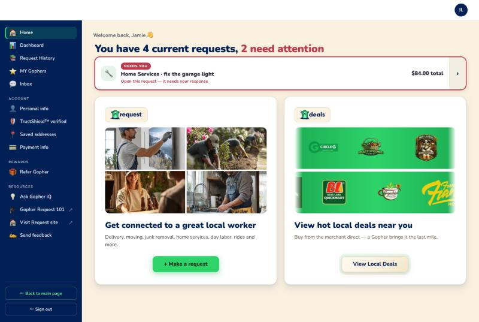
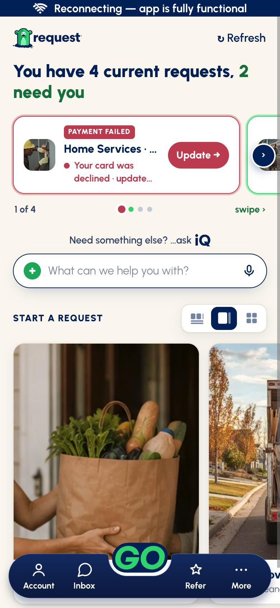
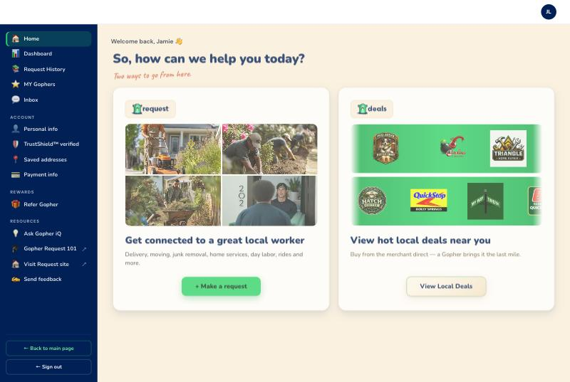
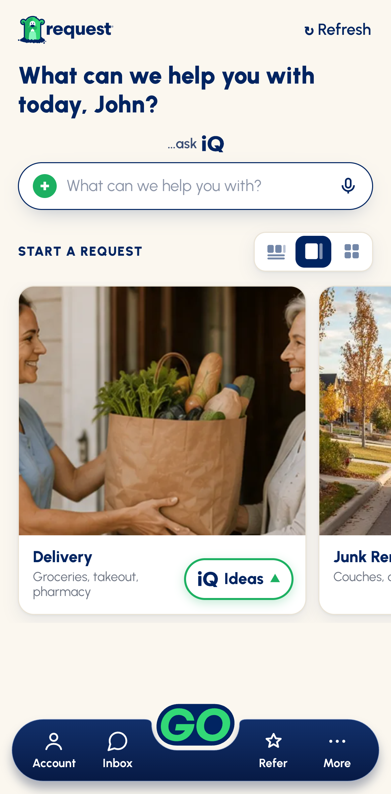

the app is the target, the web is what moves
Request home — web vs app
The requester home screen, web against the app as it is now built. Everything on the right comes from the desk's canonical master; nothing here is from the prototype.
What the app column is, and what it is not
- App = the new as-built app — your ruling. Screenshots are the
N-shell set fromlive-to-new-flow-master-assets/shell/, the desk's canonical New flow evidence. Merged and on your phones; not in a store yet — the store app is still the 10/2 build (iOS 13.11.0 / Android 3.11.0). - Not the prototype. The earlier doc I built compared against the PT and is not canon.
- The web's populated state is seeded.
activeRequestsships empty ingopher-request.html, so the home only ever shows its empty state until a requester submits something. I seeded four requests — two needing attention — purely to match the app screenshot's state. The empty shot below is the real default.
With live requests
Same state on both: four current requests, two wanting attention.
Web · gopher-request.html

App · as built

| Web | App | |
|---|---|---|
| Attention colour | Red #C44257 — “2 need attention” |
Green — “2 need you” |
| Wording | “need attention” | “need you” |
| Live requests | One card at a time, a single › arrow. No position, no dots. | Swipe carousel with “1 of 4”, dot indicators and a “swipe ›” hint. |
| Status pill | Generic “NEEDS YOU” for every attention case. | Names the actual case — “PAYMENT FAILED” — in its own colour. |
| Action | Whole card is clickable; no button. | An explicit button on the card — Update →. |
| Greeting | “Welcome back, Jamie 👋” as a separate line above the headline. | No greeting line here; the name lives in the empty-state headline instead. |
| iQ | Not on the home screen at all — only a sidebar link. | “Need something else? …ask iQ” with a live input, + and mic. |
Nothing live
The web's real default, since its active store ships empty.
Web · gopher-request.html

App · as built

| Web | App | |
|---|---|---|
| Headline | “So, how can we help you today?” — generic. | “What can we help you with today, John?” — uses the name. |
| Sub-head | “Two ways to go from here.” in Caveat. | None — the iQ prompt takes that slot. |
| What you choose from | Two big destinations: Get connected to a great local worker and View hot local deals. | A horizontal rail of category cards — Delivery, Junk Removal … each with a photo, a one-line description and an iQ Ideas pill. |
| Starting a request | One + Make a request button, then pick a category as step 1 of the flow. | Pick the category straight from home; the flow opens already on job details. |
| Navigation | Left sidebar, 13 items. | Bottom cockpit — Account · Inbox · GO · Refer · More. |
| Refresh | None. | “↻ Refresh” top right. |
Three view modes — the app has them, the web has none
A segmented control beside START A REQUEST switches how the category rail is laid out. There is no equivalent anywhere on the web home.
Row

Big cards

Doubles

If you only change three things
| 1 | Turn the attention clause green and say “need you”. It is one CSS value and one string, and it is the only item on this page where the web contradicts a standing rule of yours — green for good news to act on, red for bad. | |
| 2 | Give the live-request strip a position indicator and a real action button. Today a requester cannot tell there are four, and the card says what is wrong without offering the fix. | |
| 3 | Put the categories on the home screen. The app lets you start from the thing you want; the web makes you press a generic button and then choose. This is the biggest structural gap. | |